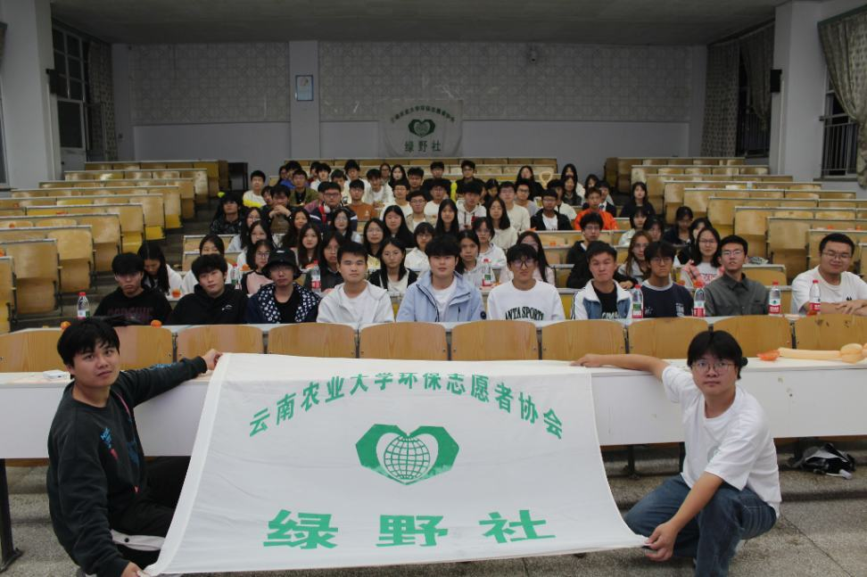

活动文体部
主要策划开展文艺演出、体育赛事、品牌活动等，丰富课余生活，搭建活动参与平台，增强集体凝聚力与团队归属感。

01 / 关于绿野
绿野社是根植于环保主题的学生社团，自成立起便以“让绿色理念扎根生活，让环保行动触手可及”为宗旨，始终围绕日常环境保护开展各类落地活动。
社团长期打造品牌活动“漂流瓶”绿色手工计划，号召同学们收集快递废纸箱、空塑料瓶等生活垃圾，改造成收纳盒、植物盆栽、创意摆件等实用手工作品。完成改造的作品会在校园内“漂流”，传递给下一位同学，让闲置废弃物重新拥有价值。
除手工活动外，我们定期发起环保倡议，组织校园净滩、光盘行动打卡、旧衣捐赠等活动，吸引了近百名热爱环保的同学加入。未来，绿野社也会继续挖掘日常环保的更多可能，带动更多人从微小行动做起，共同守护身边的绿野。
02 / 部门组成
主要策划开展文艺演出、体育赛事、品牌活动等，丰富课余生活，搭建活动参与平台，增强集体凝聚力与团队归属感。
主要负责基层组织建设与干部队伍管理，开展思想宣传，记录传播社团活动并做好引导工作。
03 / 精彩瞬间
从环保科普到旧物新生，从校园倡议到集体行动。点击照片，查看绿野社真实发生的每一段绿色记忆。
把环保理念变成看得见、能够参与的校园行动。
不定期 · 校园内
用轻松的知识问答连接环保常识与校园生活，在交流中提升环保意识和行动能力。
环保科普不定期 · 校内外
将快递纸箱、空瓶等生活废弃物改造成收纳盒、植物盆栽和创意摆件。
绿色手工云南农业大学绿野社